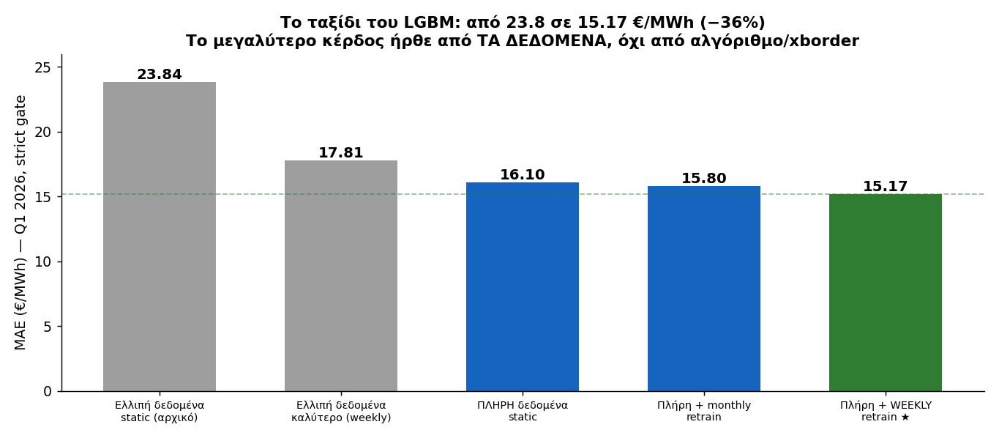
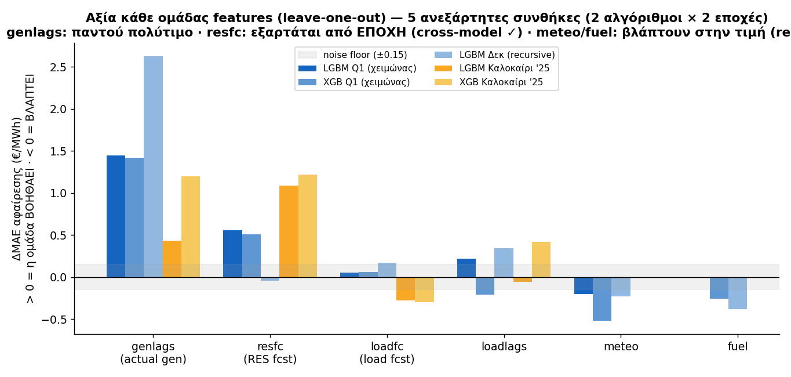
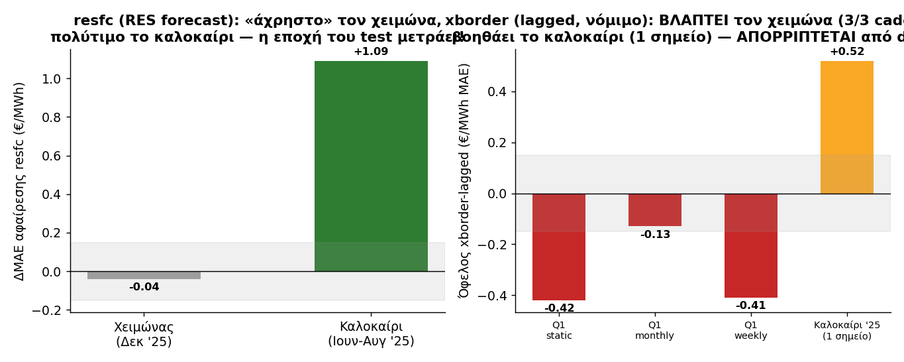
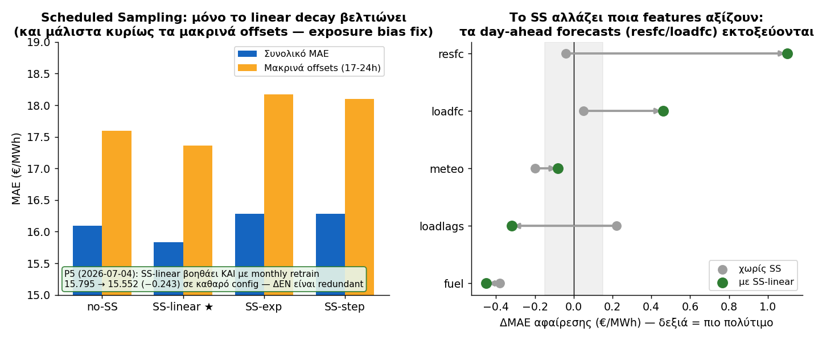
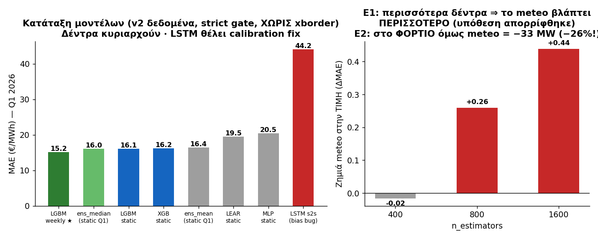
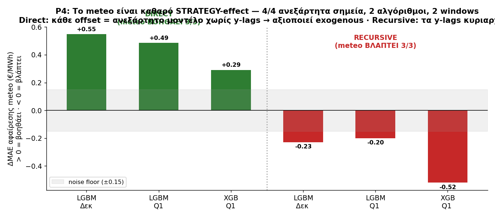
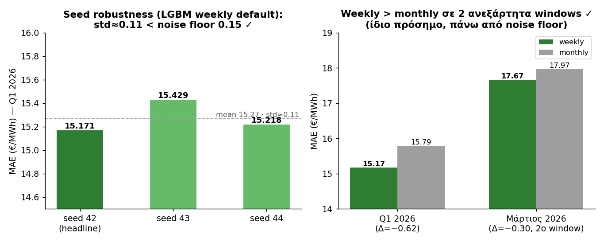

xborder — αυτά τα νούμερα ήταν leakage (οι
same-day τιμές γειτόνων BG/IT-SUD βγαίνουν από το ΙΔΙΟ SDAC auction με το ελληνικό target,
δημοσιεύονται ~13:00 CET D-1, δηλαδή ΜΕΤΑ το gate closure 12:00). Η νόμιμη (lagged) εκδοχή του
xborder ΒΛΑΠΤΕΙ τον χειμώνα. Όλα τα νούμερα παρακάτω έχουν διορθωθεί. Λεπτομέρειες:
ABLATION_PLAN.md §XBORDER-ΤΕΛΙΚΗ-ΕΤΥΜΗΓΟΡΙΑ + §OVERNIGHT PROTOCOL.default = 15.17 €/MWh
(Q1 2026, strict gate). Seed robustness: std≈0.11 (seeds 42/43/44). Επιβεβαιώθηκε σε 2ο
ανεξάρτητο window (Μάρτιος 2026: weekly 17.67 vs monthly 17.97, ίδιο πρόσημο).
Το μεγαλύτερο μεμονωμένο κέρδος (−7.7 €/MWh) ήρθε από τη συμπλήρωση των δεδομένων, όχι από αλγόριθμους. Δεύτερο: retrain (−0.9), τρίτο: cross-border τιμές (−0.8).

| Ομάδα | Ετυμηγορία |
|---|---|
| genlags (actual παραγωγή/residual load lags) | 🟢 Η πιο στιβαρά πολύτιμη — παντού, κάθε εποχή/στρατηγική/αλγόριθμο |
| resfc (day-ahead RES forecast) | 🟢 Πολύτιμο — αλλά ΜΟΝΟ ορατό σε καλοκαιρινό test window (και υπό SS) |
| xborder (τιμές BG/IT-SUD, lagged/νόμιμο) | 🔴 ΑΠΟΡΡΙΦΘΗΚΕ από default — βλάπτει τον χειμώνα σε 3/3 retrain cadences (το προηγούμενο «θετικό» ήταν leakage)· βοηθάει το καλοκαίρι (1 σημείο, ανοιχτό ερώτημα) |
| loadfc, loadlags | 🟡 Οριακά/ασταθή — το loadfc γίνεται χρήσιμο μόνο υπό SS |
| meteo, fuel | 🔴 Βλάπτουν στην ΤΙΜΗ (recursive) — αλλά meteo = κορυφαίο feature στο ΦΟΡΤΙΟ |



default χωρίς xborder) επαναλήφθηκε καθαρά στο §7 (P6) παρακάτω.Μετά την ανακάλυψη του xborder leakage, τρέξαμε ένα δομημένο πρωτόκολλο 6 φάσεων (P1-P6) που
ξαναέλεγξε ΚΑΘΕ ανοιχτό ζήτημα πάνω σε καθαρά (χωρίς xborder) configs, με ρητά κριτήρια αποδοχής
(|ΔMAE|>0.15 ΚΑΙ ίδιο πρόσημο σε ≥2 ανεξάρτητες συνθήκες). Πλήρεις πίνακες:
ABLATION_PLAN.md §5.


| Φάση | Ερώτημα | Ετυμηγορία |
|---|---|---|
| P1 | xborder-lagged στο default set; | 🔴 ΑΠΟΡΡΙΦΘΗΚΕ — βλάπτει τον χειμώνα (3/3 cadences), βοηθάει το καλοκαίρι (1 σημείο, PENDING ως γενικό συμπέρασμα) |
| P2 | Ισχύουν τα ευρήματα σε XGB/LEAR/MLP; | 🟢 resfc/genlags επιβεβαιώθηκαν cross-model (XGB summer, MLP)· 🔴 LEAR αντιδράει ΑΝΤΙΘΕΤΑ (L1 regularization) — μοντελο-εξαρτώμενο, όχι artifact |
| P3 | Ensembles με τίμιο (out-of-sample) calibration; | 🔴 weighted-by-1/MAE ΑΠΟΡΡΙΦΘΗΚΕ — κανένα ensemble δεν κερδίζει το καλύτερο μεμονωμένο μοντέλο στο honest split· weekly LGBM+XGB δείχνει PENDING υπόσχεση (Δ=−0.148, ακριβώς στο όριο) |
| P5 | Είναι το SS πράγματι redundant με retrain; | 🟢 ΔΙΟΡΘΩΘΗΚΕ — το SS-linear βοηθάει ΚΑΙ στο monthly (−0.243) σε καθαρό config· το παλιό «redundant» ήταν artifact του xborder-contaminated config |
| P4 | Direct vs recursive στο πλήρες Q1; | 🔴 Direct παραμένει σαφώς χειρότερο (19.5 vs 16.1)· 🟢 ΝΕΟ: meteo βοηθάει ΠΑΝΤΑ στο direct (4/4 σημεία) — το πιο στιβαρό strategy-effect εύρημα της μελέτης· cross-strategy ensemble ΑΠΟΡΡΙΦΘΗΚΕ |
| P6 | Robustness τελικού headline; | 🟢 ΔΕΚΤΟ — std≈0.11 σε 3 seeds, επιβεβαιωμένο σε 2ο window (Μάρτιος 2026) |
| # | Θέμα | Κατάσταση / τι λείπει |
|---|---|---|
| 1 | Summer xborder-lagged θετικό σήμα (−0.52) | 1 σημείο (static μόνο) — θέλει monthly/weekly καλοκαίρι ή 2ο seed |
| 2 | Weekly LGBM+XGB ensemble (−0.148) | Ακριβώς στο noise floor, 1 σημείο — θέλει Μάρτιο ή seeds |
| 3 | resfc στο direct | LGBM ουδέτερο vs XGB βλάπτει — algo-dependent, άλυτο |
| 4 | fuel window-confound στο direct | Δεκ −0.68 vs Q1 ~0 — αδιευκρίνιστο |
| 5 | loadlags καλοκαίρι | LGBM ουδέτερο vs XGB +0.42 — ασυνεπές |
| 6 | SS × weekly | Αδοκίμαστο (SS οφέλη ίσως στοιβάζονται και με weekly) |
| 7 | LSTM calibration bug | Bias +41, ποτέ αρνητικές τιμές — θέλει debugging, όχι rerun |
| 8 | solar_fc_dayahead ύποπτο 2h shift | High-priority data-quality έλεγχος (επηρεάζει resfc) — §1 πρωτόκολλο |
| 9 | henex_premarket ομάδα | Ποτέ κανένα τεστ |
Κύριο (στάδιο πλάνου): Data ✅ → Engine ✅ → Feature validity ✅ → Model/strategy ✅ →
Robustness ✅ → Probabilistic layer (conformal) ← ΕΔΩ → Product (L3-L5). Split-conformal
p10/p50/p90 πάνω στο κλειδωμένο config, αξιολόγηση pinball + coverage σε Q1 + Μάρτιο· σύγκριση
με quantile-LGBM. Βλ. ABLATION_PLAN.md §8.2 και το έτοιμο prompt στο
last.md §5.
Vetted feature candidate — xb_lag1_h0 (πέρασε τον pre-flight έλεγχο στα χαρτιά):
το lag1 της ώρας-στόχου 00:00 είναι η 23:00 της D-1, δημοσιευμένη ~13:00 D-2 — δηλαδή ΠΡΙΝ
το gate. Για ώρες 01-23 είναι παράνομο → NaN (τα δέντρα το χειρίζονται). Μικρό αναμενόμενο
effect (1/24 των γραμμών) — μετριέται και στο υποσύνολο ώρας-0. ABLATION_PLAN.md §8.1.